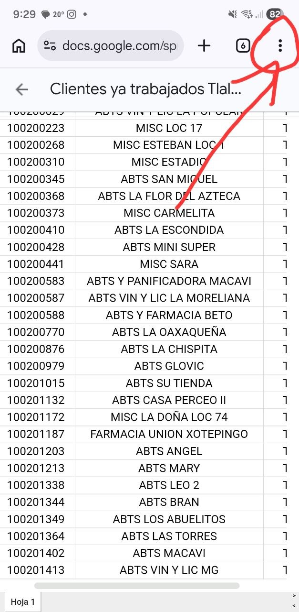
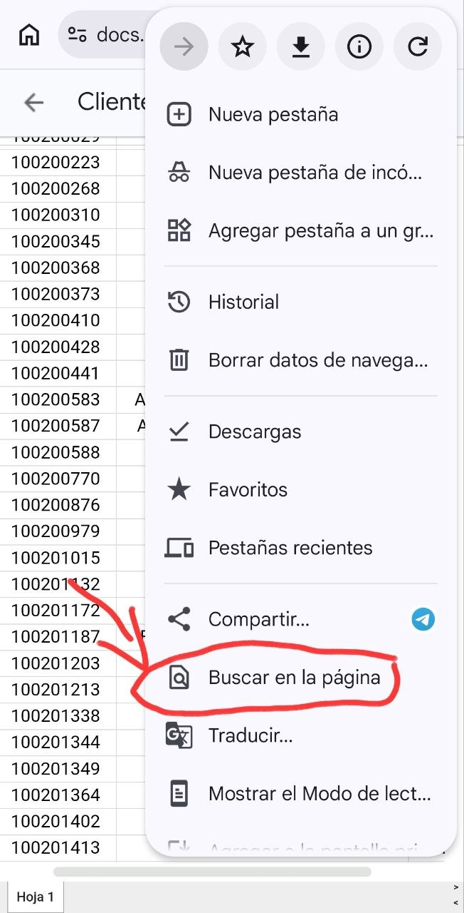
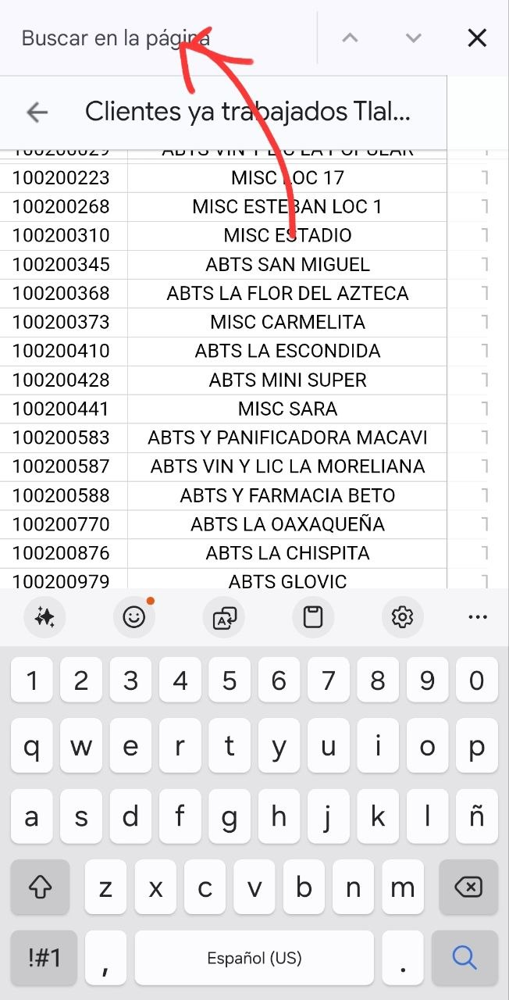
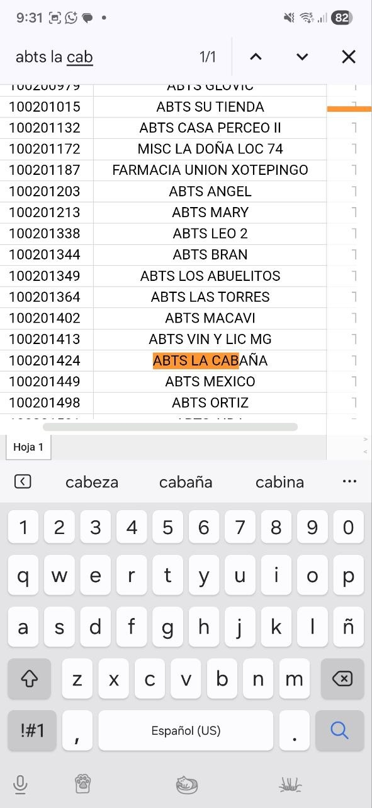

Localiza rápidamente a cualquier cliente evaluado en EPICA siguiendo estos pasos
Abre el listado de tu región

Desde la página de mapas de tu zona toca el botón 📋 Clientes ya evaluados en EPICA. El documento se abrirá en Google Sheets, ya sea en tu navegador o en la app de Sheets instalada en tu celular.
Activa la función de búsqueda

En celular: toca el ícono de tres puntos ⋮
en la esquina superior derecha y selecciona "Buscar y reemplazar".
En computadora: presiona Ctrl + F (Windows)
o ⌘ + F (Mac) para abrir el buscador de la hoja.
Escribe el dato del cliente

Ingresa el nombre, número de contrato u otro dato que identifique al cliente. Google Sheets irá resaltando automáticamente las celdas que coincidan conforme escribas.
Localiza al cliente en el listado

Usa las flechas ▲ ▼ (o el botón "Siguiente") para navegar entre todas las coincidencias encontradas. Al ubicar al cliente verás en esa fila su información completa: nombre, dirección, estado de la evaluación y datos de contacto.